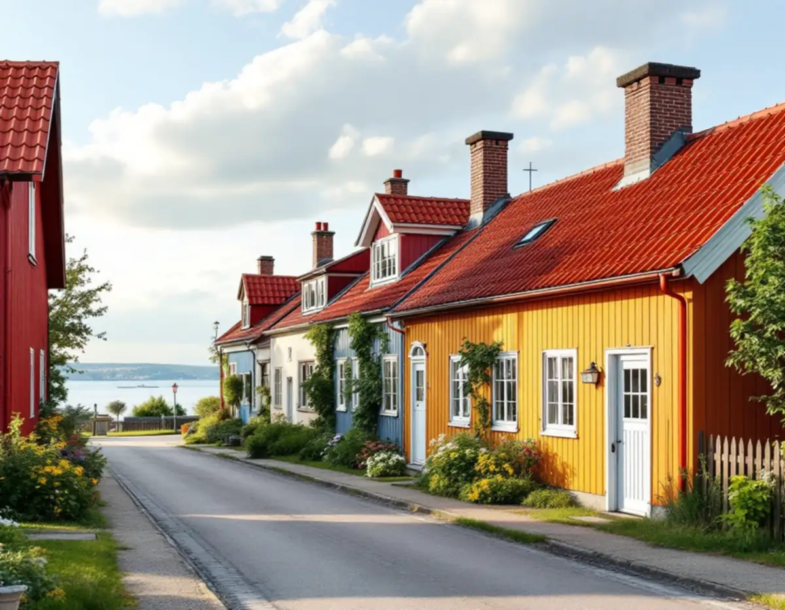
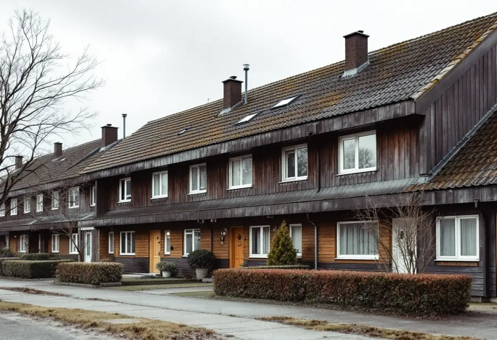

Skydd och lovfråga
Vi kontrollerar om huset omfattas av bevarandeplanen eller skyddsbestämmelser och om anmälan krävs.
I Sigtuna stad är taklandskapet rött lertegel med inslag av plåt, och kommunens bevarandeplan säger ganska exakt hur taken ska skötas. Utanför stadskärnan gäller i regel de vanliga reglerna. Vi går igenom vad det betyder för en takrenovering, från omläggning till skorstenar, plåtdetaljer och solceller.

Sigtuna kommun hade 7 387 bostäder i småhus 2024, enligt SCB. Många av dem ligger i villa- och radhusområdena kring Märsta, där en takrenovering följer samma regler som i de flesta andra kommuner. Men kommunen rymmer också Sigtuna stad, vars centrala delar är riksintresse för kulturmiljövården sedan 1986.
För stadskärnan finns en bevarande- och förnyelseplan, reviderad 2019. Den beskriver hur staden i mitten av 1800-talet mest bestod av låga trähus där de flesta tak var täckta med tegel, och hur det traditionella taklandskapet i dag domineras av rött lertegel med inslag av plåttak i olika kulörer. Planen är kommunens vägledning för underhåll och förnyelse i staden.

Bevarandeplanen säger att ett tegeltak i regel ska ersättas med likadana pannor, om det inte finns belägg för att en annan panna eller ett annat material har funnits på byggnaden tidigare. Ett enkupigt lertegel ska därför inte bytas mot det modernare tvåkupiga. Gamla takpannor beskrivs som en tillgång: de ska i första hand kompletteras, eller sparas i ett uthus vid takbyte.
Det stämmer med hur vi arbetar på ett gammalt tegeltak. Pannorna tas ner försiktigt och sorteras, underlaget byts, och hela pannor läggs tillbaka. Det som saknas kompletteras med pannor av samma typ, och överblivna hela pannor kan sparas till framtida lagningar.
Även för ombyggnad i övrigt gäller att byggnadsdetaljer som takpannor ska tas tillvara och återanvändas så långt det går. Läs mer om takmaterialens livslängd.
Planen föredrar murade eller putsade skorstenar framför plåtklädda, och vill att husen behåller sina skorstenar även när de inte längre används. Regnskydd bör utformas på plats av plåtslagare, eftersom färdiga lösningar kan bli klumpiga. Den enkla bebyggelsen hade från början inga plåtdetaljer, plåttäckning blev vanligare i slutet av 1800-talet och plåtklädda vindskivor är en modern företeelse.
Vid byte av plåtdetaljer ska det äldre utseendet vara förebild, och rena takfall ger byggnaderna ett autentiskt utseende. Takkupor och takfönster för att få ljus till en inredd vind är bygglovspliktiga i staden och ska hållas små och placeras där de syns minst. Läs mer om skorstenar och skorstensplåt.
Solceller är också bygglovspliktiga inom riksintresset. Panelerna ska följa takets lutning och placeras där de syns minst från gatan och från Mälaren, och längs en del av Stora gatan får inga synliga paneler finnas på takfall mot gatan. Se solceller på taket.
På Sigtuna kommuns sida om tak står att du kan behöva bygglov för att byta takmaterial eller ändra takets färg om byggnaden, tomten eller området är särskilt kulturhistoriskt värdefullt, eller om detaljplanen eller områdesbestämmelserna har skyddsbestämmelser. För vissa skyddade byggnader kan det dessutom behövas en anmälan även för underhåll av taket, till exempel en omläggning.
Det betyder att en vanlig takomläggning i Sigtuna stad kan kräva kontakt med kommunen redan innan ställningen kommer upp. Kommunen anger tio veckors handläggningstid från att ansökan är komplett, så det behöver räknas in i tidplanen. För en villa i Märsta utan skyddsbestämmelser är materialbyte normalt lovfritt, enligt Boverket.
Kommunen skriver att flygtrafiken orsakar buller som påverkar stora delar av kommunen och styr var nya bostäder kan byggas. Vid nybyggnad eller tillbyggnad inom influensområdet tar kommunen kontakt med Swedavia innan beslut fattas. En takrenovering är inte en tillbyggnad, men ska taket höjas eller vinden byggas på är det bra att veta att frågan prövas.
Byggs vinden om i samband med att taket läggs om är det också ett tillfälle att se över isoleringen, som kommunen nämner bland de bullerbegränsande åtgärderna. Läs mer om vindsisolering, om takläggare i Sigtuna och om målare i Sigtuna om vindskivor och takfot ska målas.
Vi kontrollerar om huset omfattas av bevarandeplanen eller skyddsbestämmelser och om anmälan krävs.
Pannor, underlag, skorsten och plåtdetaljer bedöms, och vi noterar vilken panntyp som ligger.
Pannorna tas ner och sorteras, och hela pannor ställs undan för att läggas tillbaka.
Papp och läkt byts och skadad råspont ersätts.
Plåtdetaljer och regnskydd formas på plats efter det äldre utseendet.
Vi går igenom taket med dig och lämnar överblivna hela pannor för framtida lagningar.
För arbetskostnaden får du rotavdrag med 30 procent, upp till 50 000 kr per person och år och högst 75 000 kr tillsammans med rutavdrag. Material, resor och utrustning ger inget avdrag. Vi drar av beloppet direkt på fakturan, enligt Skatteverket.
Avdraget gäller bara den del av fakturan som är arbetskostnad, därför redovisar vi arbete och material var för sig i kostnadsförslaget. Mer om vad som räknas finns under rotavdrag för takarbete.
I Sigtuna stad påverkas kostnaden av hur många pannor som kan läggas tillbaka, hur svåra plåtdetaljerna och skorstenarna är och om kommunens prövning påverkar tidplanen. I Märsta handlar det mer om takets storlek, underlagets skick och plåten runt genomföringar. Läs mer om vad en takrenovering kostar eller räkna på ditt tak i kalkylatorn för takbyte.
Takbyte, besiktning och plåtarbeten.
Takläggare i Sigtuna →Så fungerar en omläggning.
Takrenovering och takomläggning →Det här styr priset.
Vad kostar en takrenovering? →Räkna på takytan och ROT.
Takbyte-kalkylator →Bollstanäs, Vilunda och Runby.
Takrenovering i Upplands Väsby →Villaområden och gårdar.
Takrenovering i Vallentuna →Norrviken, Tureberg och Edsberg.
Takrenovering i Sollentuna →